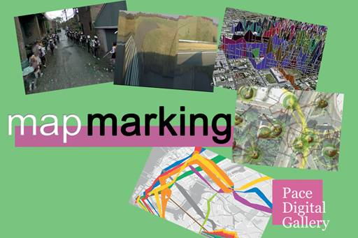
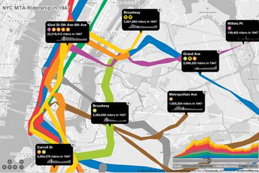
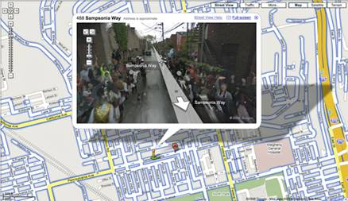
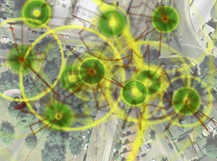
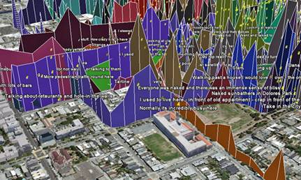
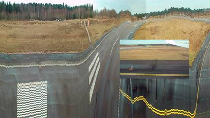

|
|
|||
|

|
 |
||
|
|
||
Apr. 6 –
|
|
Map Marking
features five works by artists and designers
who employ digital technology to create maps, annotate them or intervene in
the mapping process. Taken as a whole this exhibition represents a
personalized cartography that endows maps and the spaces to which they are
linked with the ephemera of life, from the fleeting sensations of the
environment to the transitory movements of people and their emotions. Jeremy
Wood maps out his personal life by charting his walks throughout |
|
Francis T. Marchese, curator, is co-director
of the Pace Digital Gallery and works in visual computing. (csis.pace.edu/~marchese)
The Pace Digital Gallery gratefully acknowledges the
support of |
|
NYC Subway Ridership
1905 – 2006, (2009). In NYC Subway Ridership 1905 – 2006 Sha Hwang has created an interactive visualization of NYC subway ridership from 1905-2006. Beginning with a database containing the annual ridership for each station in the NYC subway system and applying two different methods of representation — scaled dots (centered on each station) and lines (connecting stations), a viewer can track the ebb and flow of masses of anonymous New Yorkers as they course through the New York subway system throughout its history. (www.diametunim.com/shashi/nyc_subways) |
 |
|
Sha Hwang began his university studies in
engineering but changed to architecture, receiving a BA in Architecture from
the |
|
|
Street With A View, (2008). Street With A View is the
first artistic intervention in Google Street View. Artists Robin Hewlett and
Ben Kinsley invited the Google Inc. Street View team and residents of |
 |
|
Robin Hewlett is an artist who lives
and works in Ben Kinsley is a multidisciplinary artist
who creates site-specific responses to particular situations, often though
collaboration with local residents. His projects have ranged from conducting
an orchestra of screaming humans, directing a maritime-themed play for
boaters on a lake in |
|
|
Sensity Brixton Sensity Brixton London is an audio-visual artwork by Stanza that visualizes the dynamic data around the artist's environment. The city is made up of bits of data that change and Stanza's wireless sensor network captures and interprets this change, presenting it online in real-time. Sensity represents the movement of people, pollution in the air, the vibrations and sounds of buildings. They are in effect the emergent social sculptures that embody the emotional state of the city, representing the sense of accumulated incidents of love, abuse, death, and the fundamentally of change. (www.stanza.co.uk/sensity/motes/mote_sounds.html) |
 |
|
Stanza is an internationally recognized
award winning artist whose work has appeared at the Venice Biennale, |
|
|
San Francisco Emotion Map by Christian Nold presents a
collaborative emotional portrait of |
 |
|
Christian Nold is an artist, designer, and educator who develops
participatory models for communal representation. In 2001 he wrote the book Mobile Vulgus,
which examined the history of the political crowd and set the tone for his
research into participatory mapping. Since graduating with an MA from the
Royal College of Art in 2004, Christian has led a number of large scale
participatory projects including his widely received ‘Bio Mapping,' which has
been staged in sixteen countries. He is currently based at The Bartlett, the
Faculty of the Built Environment at University College London. (www.softhook.com) |
|
|
Star Flights, Star Flights (www.gpsdrawing.com/jw/work/star.html)
|
 |
|
Jeremy Wood is a multidisciplinary artist
and map maker who employs |
|